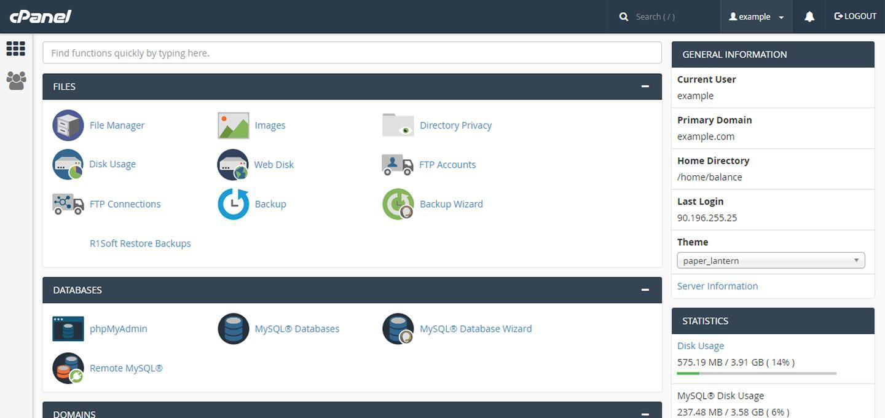
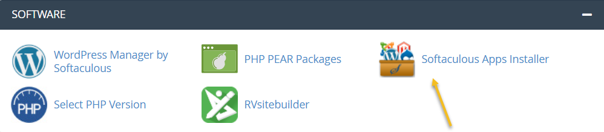
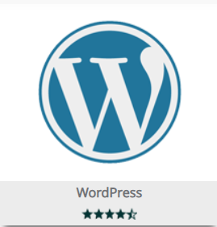
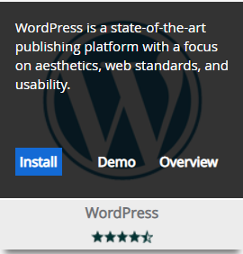
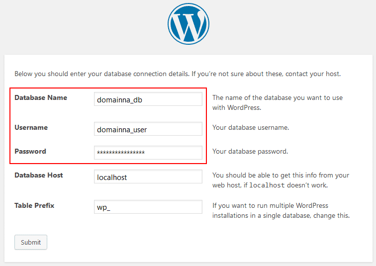
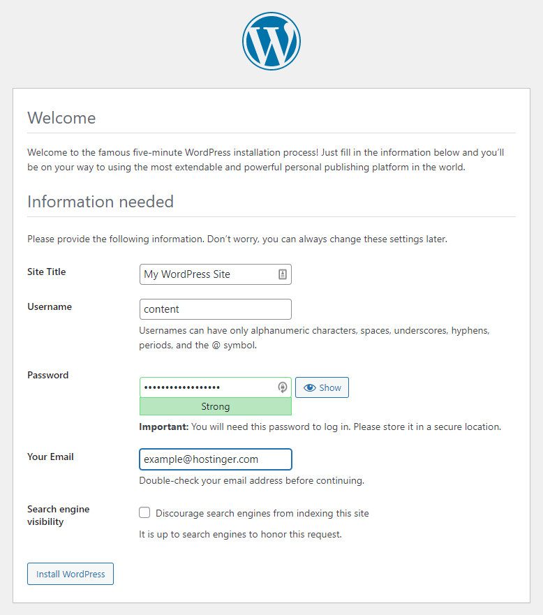
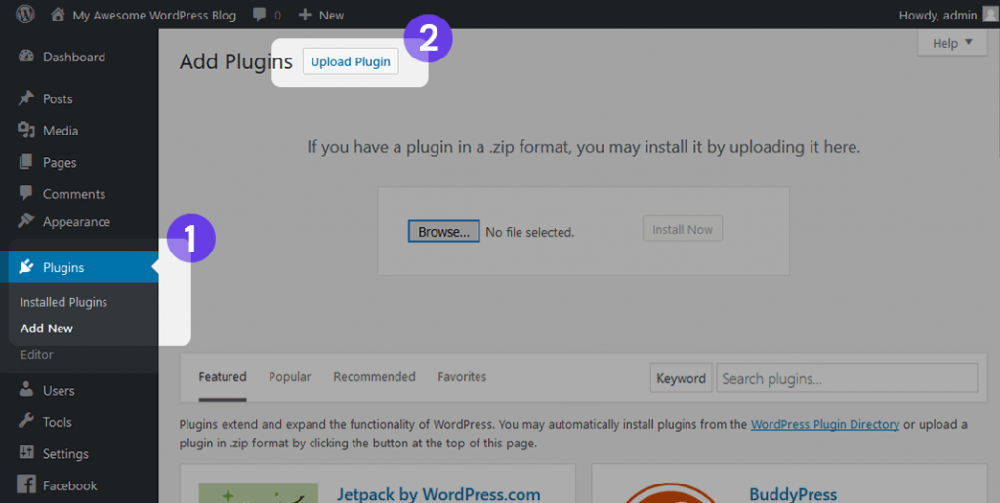

cPanel is a popular web-based control panel that simplifies the process of hosting a website. It provides an easy-to-use graphical interface to manage various aspects of your website and hosting account, such as creating email accounts, managing databases, installing software like WordPress, setting up security settings, and more.
cPanel is primarily used on Linux servers and is designed to be user-friendly, even for those without much technical knowledge. It is widely used by website owners, web developers, and hosting providers around the world.
In summary, cPanel makes it easier to manage all aspects of your web hosting account and website, providing you with a centralized location to access important features and settings.
Here are the steps to install WordPress on cPanel:
Step 1: Log in to your cPanel account using your username and password.
Step 2: Click on the "Softaculous Apps Installer" icon, typically located in the "Software" or "Applications" section of cPanel.
Step 3:In the Softaculous installer page, find WordPress from the list of available applications and click on it.
Step 4:Click the "Install Now" button to start the installation process.
Step 5: Fill out the required fields such as the domain name, database name, admin username, and password.
Step 6: Under "Site Settings", enter the site name and description for your website.
Step 7: Choose a theme for your website and then click the "Install" button at the bottom of the page.
Step 8:Wait for the installation to complete, which can take several minutes.
Step 9:Once the installation is finished, you will see a confirmation message. You can now access your new WordPress site by clicking the provided link.
Congratulations! You have successfully installed WordPress on cPanel.
Here are some recommended virtual hosts for foreign trade independent stations that bloggers think are suitable, and the best wordpress hosting hosts
| Provider | Disk | Network | Data Centers | Price |
| Hostinger | 100G | Unlimited | United States、Hong Kong、Singapore、United Kingdom、Russia | $ 2.99 |
| InterServer | Unlimited | Unlimited | Los Angeles、New Jersey | $ 2.50 |
| Bluehost | Unlimited | Unlimited | United States、Hong Kong、European、Indian | $ 2.95 |
| SugarHosts | Unlimited | Unlimited | United States、Hong Kong、German | $ 4.40 |
| Siteground | 100G | Unlimited | North American、European、Singapore | $ 1.99 |
| GreenGeeks | 50 GB | Unlimited | Dallas、New York、Amsterdam、Toronto、Singapore、Hong Kong | $ 2.95 |
| HostGator | Unlimited | Unlimited | United States、Hong Kong | $ 2.75 |
| DreamHost | 50 GB | Unlimited | United States | $ 2.59 |
| Namecheap | Unlimited | Unlimited | United States、Hong Kong | $ 1.58 |
| iPage | Unlimited | Unlimited | United States | $ 1.99 |
| InMotion | Unlimited | Unlimited | Australia、Russia、Indonesia、France | $ 2.29 |
| A2 Hosting | 100 GB | Unlimited | Australia、Russia、Indonesia、France | $ 2.99 |
| FastComet | 15 GB | Unlimited | Australia、Russia、Indonesia、France | $ 2.19 |
| Hostens | 10 GB | 1 TB | Lithuania、Finland、Singapore、Washington | $ 0.90 |
There are several advantages of using cPanel to install WordPress:
1、Easy installation process: cPanel makes it very easy to install WordPress on your web hosting server. With just a few clicks, you can get started with your WordPress website without any technical knowledge.
2、Automatic updates: cPanel ensures that WordPress is always up to date by automatically installing the latest versions and security patches. This helps to keep your WordPress website secure and functioning properly.
3、User-friendly interface: cPanel provides an intuitive and user-friendly interface for managing your WordPress site. You can easily manage your files, databases, email accounts, and other aspects of your website from a single platform.
4、Customization options: cPanel allows you to customize your WordPress site by installing themes and plugins. There are thousands of free and premium themes and plugins available, which means you can create a unique and functional website that meets your specific needs.
5、Reliable performance: cPanel is a highly reliable platform that ensures maximum uptime for your website. This means that your visitors will be able to access your site 24/7 without any downtime.
Overall, cPanel simplifies the process of setting up and managing your WordPress website, making it a popular choice among website owners and developers alike.
Installing WordPress using cPanel is a straightforward process, but paying attention to security measures can help prevent your site from being hacked or compromised. Here are some steps you should take to install WordPress with cPanel securely:
1、Use a strong username and password: During the installation process, make sure to create a strong username and password for your WordPress login credentials. Avoid using simple or common passwords that can be easily guessed by hackers.
2、Install WordPress in a secure location: When installing WordPress, make sure to choose a secure location for your website's files. Avoid using the default directory and instead create a new folder outside of the public_html directory.
3、Keep WordPress up-to-date: Install the latest version of WordPress and regularly update it to ensure that your site is protected against known vulnerabilities. You can also enable automatic updates in the WordPress settings.
4、Use secure hosting: Choose a hosting provider that uses encryption protocols such as SSL to protect your data when it is transmitted over the internet. This will help secure your site from attacks like man-in-the-middle (MITM) attacks.
5、Install plugins for added security: Consider installing WordPress security plugins like Wordfence, Sucuri Security, or iThemes Security to add an extra layer of security to your site. These plugins can provide features like two-factor authentication, malware scanning, and firewall protection.
By following these steps, you can install WordPress securely using cPanel and minimize the risk of your site being hacked or compromised.
Do I need any technical skills to install WordPress on cPanel?
No, you do not need any technical skills to install WordPress on cPanel. The Softaculous installer in cPanel is a user-friendly tool that simplifies the installation process.
Is it necessary to have a domain name before installing WordPress?
Yes, you will need a domain name before installing WordPress as it is required to set up your website's address and access it on the internet.
Can I use a subdomain for my WordPress website?
Yes, you can use a subdomain, such as blog.example.com, to install WordPress on cPanel.
What is the database name in the WordPress installation form?
The database name is the name of the MySQL database where your WordPress site will store all its data.
How long does it take to install WordPress on cPanel?
The installation process usually takes only a few minutes, depending on your internet speed and server performance.
Do I need to configure anything after installing WordPress on cPanel?
Once you have installed WordPress on cPanel, you may need to configure your site's settings, themes, plugins, and other features to customize it according to your needs. However, this depends on your requirements, and you can start using your website right away after the installation.

This tutorial is based on wordpress hosting hosting your wordpress website. We have introduced three types of

CentOS is a Linux distribution that can be used as an operating system to host web applications like WordPress.

Ubuntu is a popular open-source operating system based on the Linux kernel. It is known for its user-friendly

This tutorial is based on wordpress hosting hosting your wordpress website. We have introduced three types of